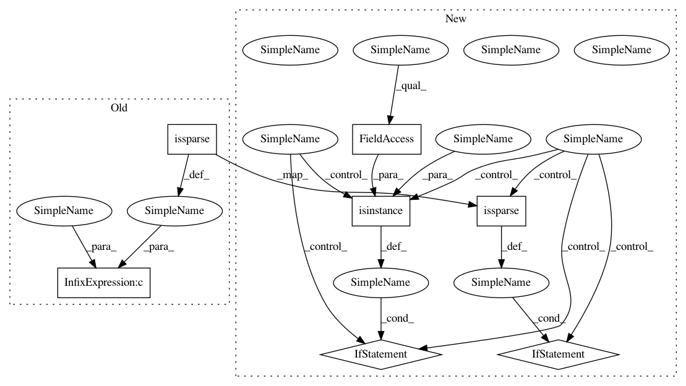

50fa5e19393d5179a1b5c3253988284eca182bbe,auto_ml/utils_model_training.py,FinalModelATC,predict,#FinalModelATC#,501
Before Change
X = np.column_stack([X, ones])
if (self.model_name[:16] == "GradientBoosting" or self.model_name[:12] == "DeepLearning" or self.model_name in ["BayesianRidge", "LassoLars", "OrthogonalMatchingPursuit", "ARDRegression"]) and scipy.sparse.issparse(X):
X_predict = X.todense()
elif self.model_name[:8] == "CatBoost" and scipy.sparse.issparse(X):
X_predict = X.toarray()
After Change
if (self.model_name[:16] == "GradientBoosting" or self.model_name[:12] == "DeepLearning" or self.model_name in ["BayesianRidge", "LassoLars", "OrthogonalMatchingPursuit", "ARDRegression"]):
if scipy.sparse.issparse(X):
X_predict = X.todense()
elif isinstance(X, pd.DataFrame):
X_predict = X.values
elif self.model_name[:8] == "CatBoost":
if scipy.sparse.issparse(X):
X_predict = X.toarray()
elif isinstance(X, pd.DataFrame):
X_predict = X.values
else:
X_predict = X
In pattern: SUPERPATTERN
Frequency: 4
Non-data size: 7
Instances
Project Name: ClimbsRocks/auto_ml
Commit Name: 50fa5e19393d5179a1b5c3253988284eca182bbe
Time: 2017-12-05
Author: climbsbytes@gmail.com
File Name: auto_ml/utils_model_training.py
Class Name: FinalModelATC
Method Name: predict
Project Name: ClimbsRocks/auto_ml
Commit Name: 50fa5e19393d5179a1b5c3253988284eca182bbe
Time: 2017-12-05
Author: climbsbytes@gmail.com
File Name: auto_ml/utils_model_training.py
Class Name: FinalModelATC
Method Name: predict_proba